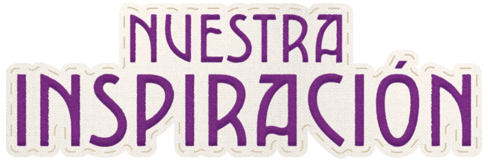
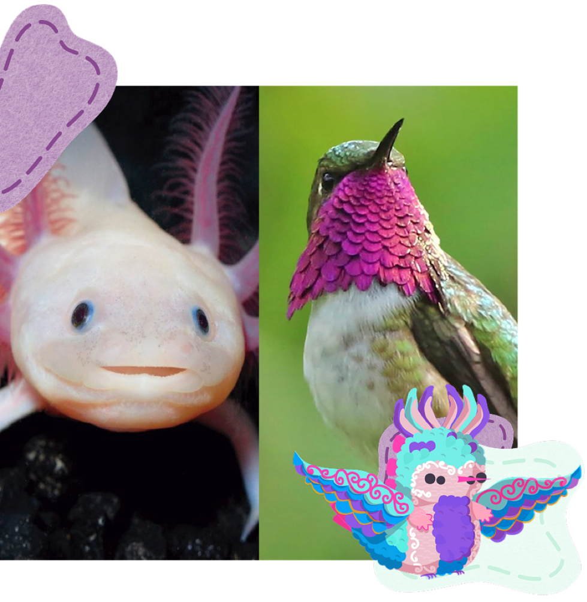
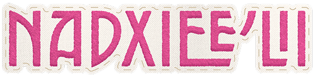
Nadxiee’lii surge de la combinación de un ajolote y un colibrí
zumbador.
Ajolote (Ambystoma mexicanum):
Anfibio endémico de México, famoso por su apariencia y su
capacidad de conservar características larvarias en la adultez.
Habita los canales de Xochimilco, amenazados por la contaminación
y la actividad humana.
Colibrí zumbador (Selasphorus heloisa):
Pequeña ave endémica de México, de apenas 8 cm. Su hábitat se ve
amenazado por la urbanización y el tráfico ilegal de especies.
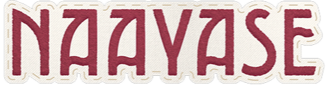
Mofeta pigmea (Spilogale pygmaea):
Pequeño mamífero carnívoro endémico de México, amenazado por la
pérdida y fragmentación de su hábitat debido a la expansión
agrícola y ganadera.
Tortuga de caja (Terrapene coahuila):
Reptil endémico del noreste de México, capaz de cerrar su
caparazón para protegerse. Está amenazada por la pérdida de
hábitat y el tráfico ilegal de especies.
Quetzal (Pharomachrus mocinno): Ave
reconocida por su plumaje y canto, venerada por antiguas
civilizaciones mesoamericanas. Actualmente enfrenta amenazas por
la pérdida de su hábitat y el comercio ilegal.
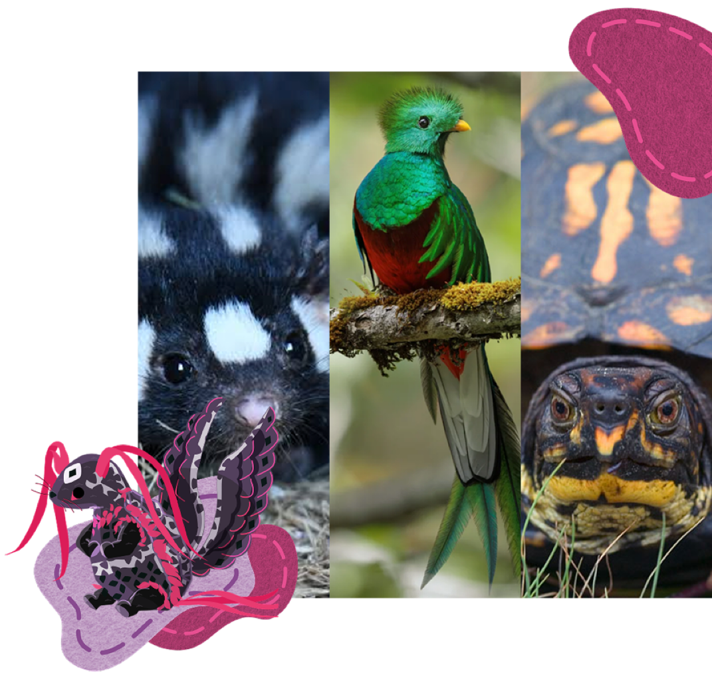
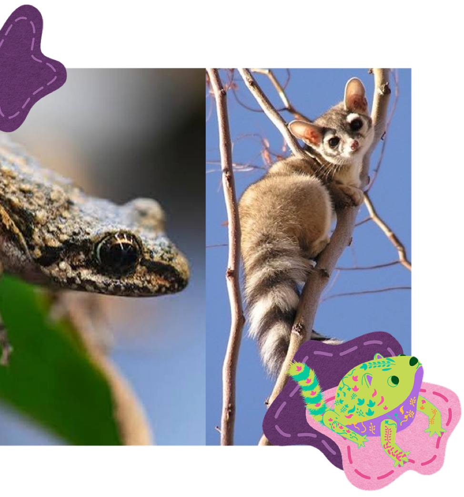
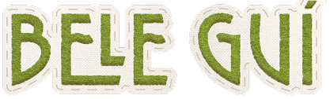
Bele guí surge de la combinación de una rana guerrerense y un
cacomixtle.
Rana guerrerense (Craugastor guerreroensis):
Anfibio endémico de Guerrero, amenazado por la destrucción y
alteración de los bosques de montaña donde habita.
Cacomixtle (Bassariscus astutus):
Mamífero omnívoro de la familia Procyonidae, emparentado con los
mapaches. Se adapta fácilmente a distintos entornos, incluidos los
urbanos, y no se considera una especie en peligro de extinción.
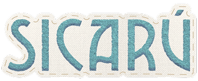
Sicarú surge de la combinación de una vaquita marina y un venado
bura.
Vaquita marina (Phocoena sinus):
Cetáceo endémico del Alto Golfo de California, en peligro crítico
de extinción debido a la captura accidental en redes de pesca,
especialmente las utilizadas para la pesca ilegal de totoaba.
Venado bura (Odocoileus hemionus):
Mamífero de la familia Cervidae que habita distintas regiones de
América del Norte. Algunas poblaciones insulares, como la de Isla
Cedros, están amenazadas por la caza y la pérdida de hábitat.
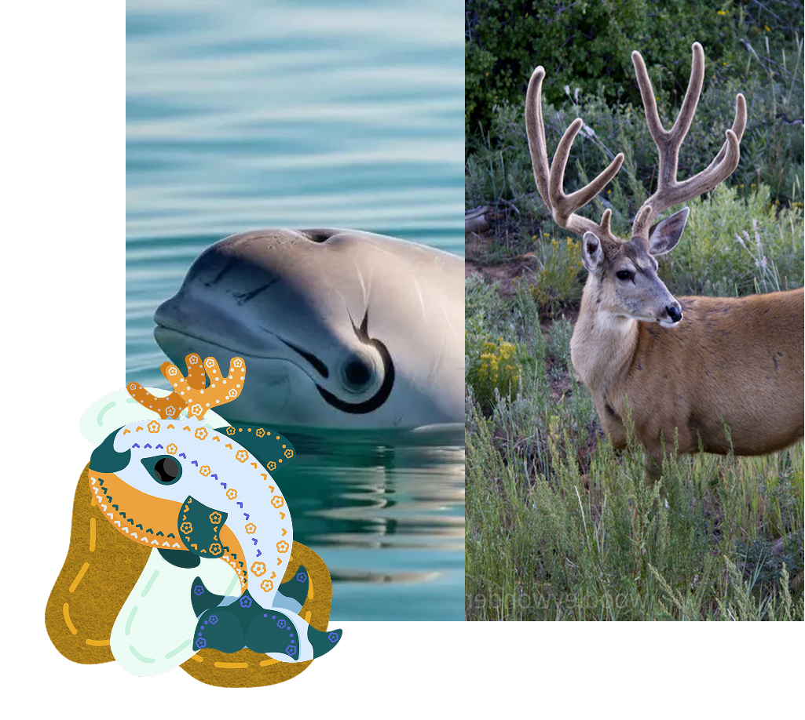
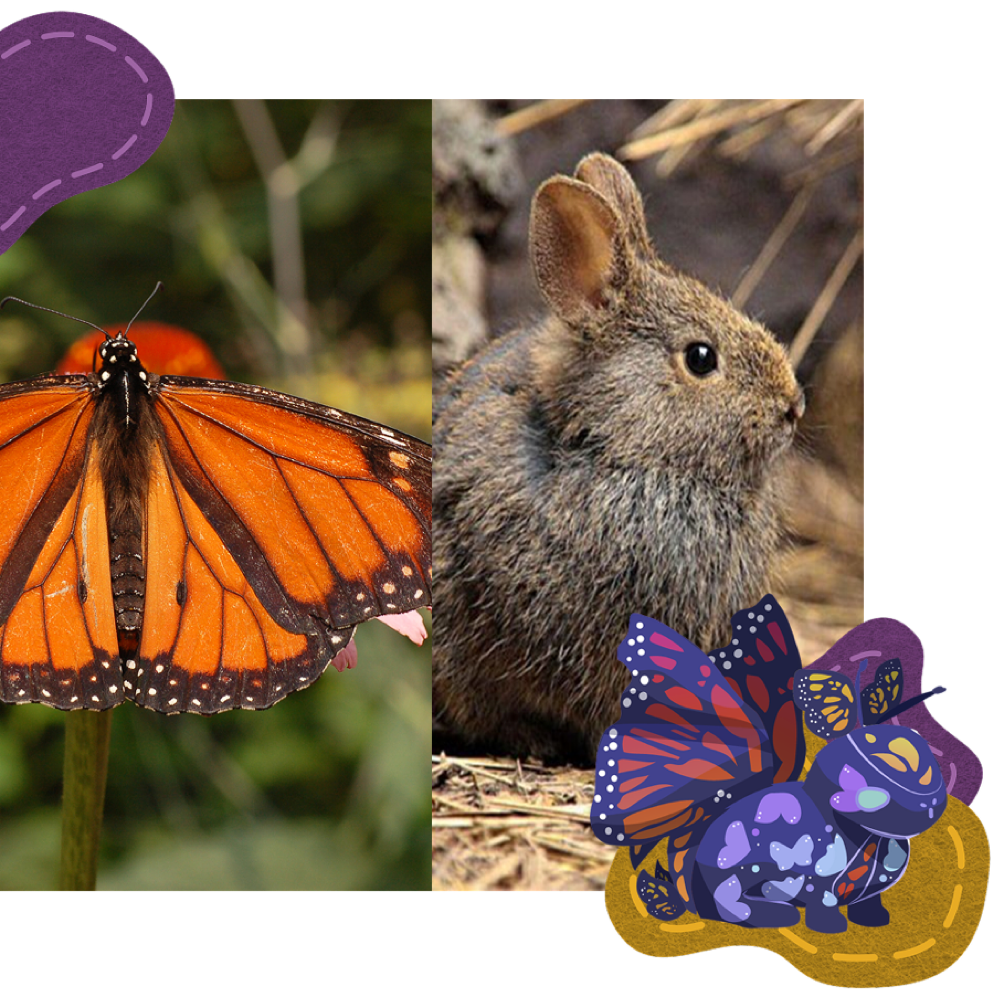
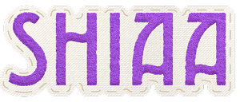
Shiaa surge de la combinación de una mariposa monarca y un
teporingo.
Mariposa monarca (Danaus plexippus):
Insecto famoso por su migración y sus llamativos colores. Sus
poblaciones están amenazadas por el uso de pesticidas, la pérdida
de plantas hospederas y la degradación de sus hábitats.
Teporingo (Romerolagus diazi): Pequeño
mamífero endémico de México que habita las zonas montañosas del
centro del país. Está en peligro de extinción debido a la pérdida
y fragmentación de su hábitat por la urbanización y las
actividades agrícolas.
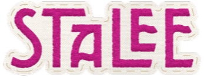
Stalee surge de la combinación de un chingolo serrano y un loro
yucateco.
Chingolo serrano (Xenospiza baileyi):
Ave endémica de México que habita pastizales de zacatón. Está en
peligro de extinción debido a la destrucción y fragmentación de su
hábitat por la urbanización y las actividades agrícolas.
Loro yucateco (Amazona xantholora): Ave
nativa de la península de Yucatán que habita selvas y otros
ambientes arbolados. Está amenazada por la pérdida de hábitat y el
comercio ilegal para su venta como mascota.
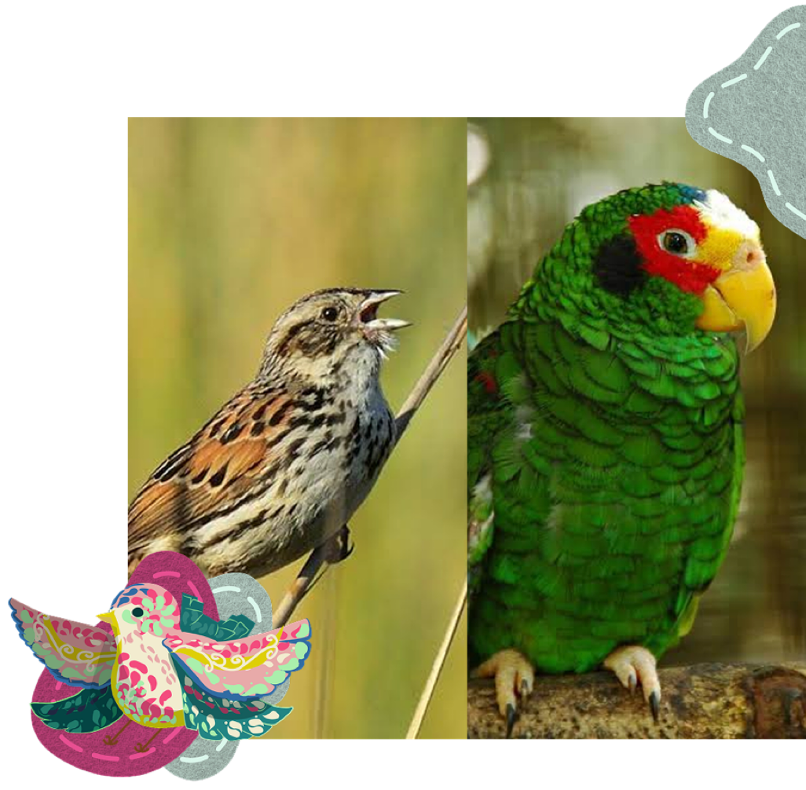